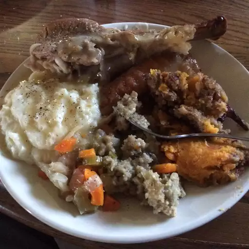

Slow Cooker Stuffing

Description
This savory slow cooker stuffing is a delicious addition to your holiday feast. It's easy to make and frees up valuable oven space during busy cooking times.
Ingredients
li>8 cups bread cubes
- 1 cup diced celery
- 1 cup diced onion
- 1 cup diced apple
- 1 cup chicken or vegetable broth
- 1/2 cup melted butter
Steps
- In a large bowl, combine bread cubes, celery, onion, and apple.
- In a separate bowl, mix melted butter and chicken or vegetable broth.
- Pour the butter and broth mixture over the bread mixture. Toss until well combined.
- Transfer the mixture to a slow cooker. Cover and cook on low for 4-6 hours.
- Stir occasionally to ensure even cooking.
- Serve warm and enjoy your delicious slow cooker stuffing!